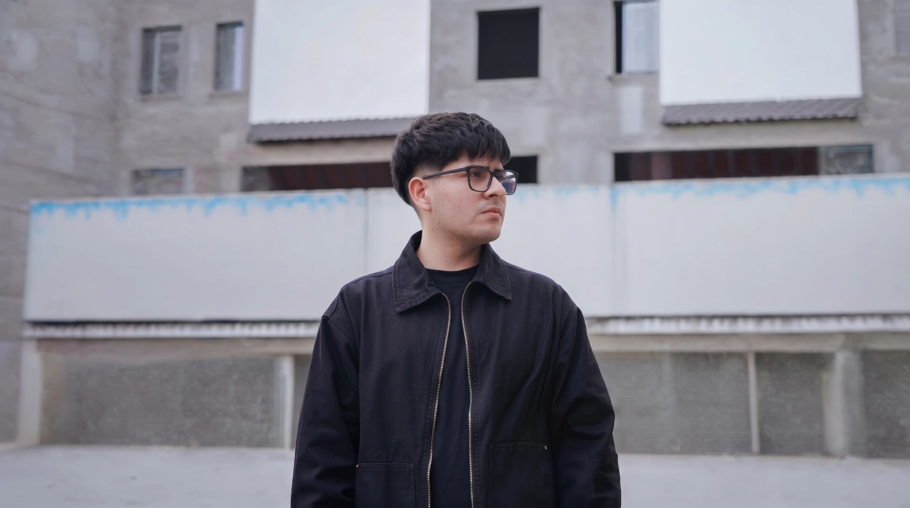

Narrativa audiovisual,
estrategia digital & tecnología
Agustín Pérez Filmmaker & Programador (UTN)
8 años transformando ideas en historias a un o un de distancia
Servicios & Especialidades
Ayudo a marcas, instituciones y
proyectos a comunicar quiénes son y conectar:
Producción Audiovisual
Integral
Realización integral de piezas institucionales, corporativas y de impacto, desde el guionado hasta la postproducción y colorimetría.
Producción Integral
Videos Institucionales
Piezas dinámicas con narrativa visual y estética moderna.
Dirección & Rodaje
Comerciales & Marcas
Producción en terreno con dirección de fotografía profesional.
Colorimetría & Edición
Documentales de Impacto
Postproducción cinematográfica en DaVinci Resolve.
Motion Graphics
Animación & Gráfica
After Effects y gráfica animada para piezas institucionales.
Postproducción
Edición Dinámica
Flujos de trabajo acelerados y sonido inmersivo.
Cobertura de Eventos
(Foto & Video)
Registro dinámico y cinematográfico de eventos culturales, institucionales y masivos con entregas ágiles optimizadas para difusión.
Territorio & Juventudes
Eventos Masivos
Cobertura territorial con foco en el calor de la comunidad.
Fotografía de Retrato
Registro Institucional
Fotografía documental y revelado digital en Lightroom.
Tiempo Real
Coberturas Ágiles
Edición y entrega en el acto para difusión en redes sociales.
Cultura & Festivales
Encuentros Sociales
Mirada cinematográfica que captura la energía real del público y cada detalle.
Aftermovies
Resúmenes de Alto Impacto
Recap de jornadas con montaje rítmico y música envolvente.
Contenido para Redes
& Storytelling
Estrategia, guionado, grabación y edición de piezas dinámicas (Reels, TikToks, Shorts) diseñadas para captar la atención y fidelizar audiencias.
Estrategia Transmedia
Campañas en Redes
Transformación del mensaje formal en contenido fresco y cercano.
Formatos Verticales
Reels & TikToks
Estructuras de gancho, retención y llamados a la acción claros.
Storytelling
Historias Reales
Entrevistas, testimonios y relatos que conmueven y generan comunidad.
Identidad para Redes
Diseño Gráfico & Feed
Carruseles, placas informativas y criterio visual para canales oficiales.
Planificación
Estrategia Editorial
Calendarización y optimización de publicaciones según métricas.
React.js &
Diseño UX/UI
Desarrollo de sitios web de alto rendimiento, interfaces accesibles y automatización de flujos con Inteligencia Artificial aplicada.
¿Buscás inspiración?... Abrí mi archivo de
O deslizá para conocer mi visión
El verdadero valor nace en el cruce
de la lógica técnica y la sensibilidad narrativa
Marcas e instituciones eligen trabajar conmigo por mi
criterio híbrido +
liderazgo en el terreno
Creemos algo
que deje huella
y conecte de verdad
Desde iniciativas comunitarias e institucionales hasta marcas y proyectos que buscan dar un salto.